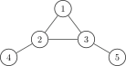
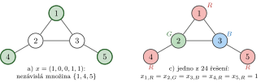
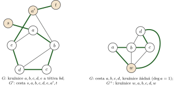
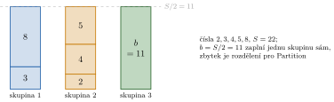

11.8 Úlohy navíc¶
Úlohy procvičují látku celé kapitoly: hamiltonovské cesty a kružnice (oddíl 11.1), tři modelovací vzory ILP (oddíl 11.2) a hlavně číselné problémy – dynamické programování, redukce s „vyrovnávacím“ číslem, unární a binární zápis a rozdíl mezi slabou a silnou NP-úplností (oddíly 11.4 a 11.5).
Neoficiální úlohy
Úlohy v tomto oddílu nejsou oficiální zadání předmětu. Jsou to procvičovací úlohy navíc k látce kapitoly; všechny tabulky, počty a protipříklady jsou spočítané programem a každá redukce i každý algoritmus byly ověřeny hrubou silou na všech malých instancích (u hamiltonovských problémů na všech grafech s nejvýše 6 vrcholy), doplněných o tisíce náhodných instancí.
11.8.1 Rozcvička¶
Úloha 11.1 (DP pro Subset Sum a zpětný průchod)
Jsou dána čísla \(a_1=3\), \(a_2=4\), \(a_3=6\), \(a_4=8\) a cíl \(T=13\).
- Vyplňte tabulku \(\mathrm{DP}[i,w]\) z věty 11.12 pro \(i=0,\dots,4\) a \(w=0,\dots,13\).
- Zpětným průchodem tabulkou najděte podmnožinu se součtem \(13\). Napište pravidlo, podle kterého se v každém kroku rozhodujete, a zdůvodněte, proč průchod vždy skončí v políčku \((0,0)\).
- Pro která \(w\le13\) je odpověď \(\NE\)? Kolik políček má tabulka a proč z toho neplyne polynomiální algoritmus?
Řešení
a) Tabulka. \(\mathrm{DP}[i,w]=\mathrm{TRUE}\), právě když z prvních \(i\) čísel lze poskládat přesně součet \(w\). Podle rekurence \(\mathrm{DP}[i,w]=\mathrm{DP}[i-1,w]\lor\mathrm{DP}[i-1,w-a_i]\) vznikne množina TRUE-políček řádku \(i\) sjednocením množiny z řádku \(i-1\) a téže množiny posunuté o \(a_i\) (bereme jen součty \(\le13\)):
- \(i=0\): \(\{0\}\),
- \(i=1\) (\(a_1=3\)): \(\{0\}\cup\{3\}=\{0,3\}\),
- \(i=2\) (\(a_2=4\)): \(\{0,3\}\cup\{4,7\}=\{0,3,4,7\}\),
- \(i=3\) (\(a_3=6\)): \(\{0,3,4,7\}\cup\{6,9,10,13\}=\{0,3,4,6,7,9,10,13\}\),
- \(i=4\) (\(a_4=8\)): posunutím o 8 vzniknou součty \(8,11,12\) (ostatní jsou větší než 13), tedy \(\{0,3,4,6,7,8,9,10,11,12,13\}\).
\(\mathrm{DP}[4,13]=\mathrm{TRUE}\), odpověď je \(\ANO\).

Tabulka \(\mathrm{DP}\) (zeleně TRUE) a zpětný průchod z políčka \((4,13)\), čtený zdola nahoru. Šikmá šipka = číslo bereme (posun o \(a_i\) sloupců doleva), svislá = nebereme. Všimni si: průchod skončí v \((0,0)\).
b) Zpětný průchod. Stojíme v políčku \((i,w)\) s hodnotou TRUE. Je-li \(\mathrm{DP}[i-1,w]=\mathrm{TRUE}\), součet \(w\) jde poskládat i bez \(a_i\): číslo nebereme a přejdeme do \((i-1,w)\). Jinak podle rekurence musí být \(w\ge a_i\) a \(\mathrm{DP}[i-1,w-a_i]=\mathrm{TRUE}\): číslo \(a_i\) vezmeme a přejdeme do \((i-1,w-a_i)\). V obou případech je nové políčko opět TRUE (invariant). V řádku \(0\) je TRUE jen \(\mathrm{DP}[0,0]\), takže průchod skončí v \((0,0)\); součet vzatých čísel je pak přesně \(T-0=T\).
- \((4,13)\): \(\mathrm{DP}[3,13]=\mathrm{TRUE}\) \(\Rightarrow\) \(a_4=8\) nebereme, jdeme do \((3,13)\).
- \((3,13)\): \(\mathrm{DP}[2,13]=\mathrm{FALSE}\) \(\Rightarrow\) bereme \(a_3=6\), jdeme do \((2,7)\).
- \((2,7)\): \(\mathrm{DP}[1,7]=\mathrm{FALSE}\) \(\Rightarrow\) bereme \(a_2=4\), jdeme do \((1,3)\).
- \((1,3)\): \(\mathrm{DP}[0,3]=\mathrm{FALSE}\) \(\Rightarrow\) bereme \(a_1=3\), jdeme do \((0,0)\).
Výsledek: \(\{a_1,a_2,a_3\}\), \(3+4+6=13\). (Je to jediná podmnožina se součtem 13.) Stejně se vypisují vybrané předměty u \(\prob{Knapsack}\)u v úloze Cvičení 5.2.
c) Odpovědi \(\NE\) a velikost tabulky. V posledním řádku chybí \(w\in\{1,2,5\}\): pro tyto cíle je odpověď \(\NE\), pro všechna ostatní \(w\le13\) je \(\ANO\). Tabulka má \((n+1)(T+1)=5\cdot14=70\) políček, každé spočítáme v \(O(1)\), čas je \(O(n\cdot T)\). To je polynom v hodnotě \(T\), ne v délce vstupu: \(T\) s \(k\) bity může být až \(2^k-1\), tabulka má pak až \(n\cdot2^k\) políček. Algoritmus je jen pseudopolynomiální (definice 11.13).
Úloha 11.2 (tři modelovací vzory ILP)
Graf \(G\) („býk“) má vrcholy \(1,\dots,5\) a hrany \(\{1,2\},\{1,3\},\{2,3\},\{2,4\},\{3,5\}\).

Graf \(G\): trojúhelník \(1,2,3\) s „rohy“ \(4\) a \(5\).
- Napište binární ILP, které je přípustné, právě když má \(G\) nezávislou množinu velikosti alespoň 3. Najděte všechna jeho přípustná řešení.
- Napište ILP pro formuli \(\Phi=(\lnot y_1\lor\lnot y_2\lor y_3)\land(y_1\lor\lnot y_3)\land(y_2\lor y_3)\land(\lnot y_1\lor y_2)\) a najděte všechna jeho řešení.
- Napište ILP, které je přípustné, právě když je \(G\) 3-obarvitelný. Kolik má proměnných a omezení a kolik přípustných řešení? Napište totéž pro dvě barvy a dokažte přímo z nerovnic, že přípustné není.
Řešení
a) Výběr podmnožiny. Stejný vzor jako u \(\prob{Vertex Cover}\redp\prob{ILP}\), jen s obrácenými nerovnicemi: \(x_v=1\) znamená „\(v\) je v množině“, hranová nerovnice říká, že vybrán je nejvýš jeden konec hrany.
Pět proměnných a šest omezení. Přípustná řešení: sečtením tří nerovnic trojúhelníku dostaneme \(2(x_1+x_2+x_3)\le3\), a protože jde o celá čísla, \(x_1+x_2+x_3\le1\). Aby byl celkový součet aspoň 3, musí být \(x_4=x_5=1\) a \(x_1+x_2+x_3=1\). Z \(x_2+x_4\le1\) plyne \(x_2=0\), z \(x_3+x_5\le1\) plyne \(x_3=0\), tedy \(x_1=1\). Jediné přípustné řešení je \(x=(1,0,0,1,1)\), tj. nezávislá množina \(\{1,4,5\}\) (a jiná velikosti 3 v \(G\) není).
b) Logika. Stejně jako v \(\prob{3-SAT}\redp\prob{ILP}\): \(y_i\in\{0,1\}\), literál \(\lnot y_i\) je \(1-y_i\), klauzule je „součet literálů \(\ge1\)“:
Řešení: z 2. a 4. nerovnice \(y_3\le y_1\le y_2\). Pro \(y_1=0\) je \(y_3=0\) a ze 3. nerovnice \(y_2=1\); první platí (\(-1\ge-1\)). Pro \(y_1=1\) je \(y_2=1\) a první nerovnice dá \(-2+y_3\ge-1\), tedy \(y_3=1\). ILP má právě dvě řešení \((y_1,y_2,y_3)=(0,1,0)\) a \((1,1,1)\) – to jsou přesně dvě splňující ohodnocení \(\Phi\).
c) Více možností. Jako v \(\prob{3-Coloring}\redp\prob{ILP}\): \(x_{v,c}\in\{0,1\}\) pro \(v\in\{1,\dots,5\}\), \(c\in\{R,G,B\}\),
To je \(5\cdot3=15\) proměnných a \(5+5\cdot3=20\) omezení. Přípustná řešení odpovídají vzájemně jednoznačně obarvením (\(x_{v,c}=1\) \(\iff\) \(v\) má barvu \(c\)): trojúhelník \(1,2,3\) obarvíme \(3!=6\) způsoby, vrchol 4 má dvě barvy různé od barvy vrcholu 2, vrchol 5 dvě barvy různé od barvy 3 – celkem \(6\cdot2\cdot2=24\) řešení.
Pro barvy \(\{R,G\}\): 10 proměnných, rovnice \(x_{v,R}+x_{v,G}=1\) a nerovnice \(x_{u,c}+x_{v,c}\le1\) pro \(c\in\{R,G\}\) (celkem \(5+10=15\) omezení). Pro pevnou barvu \(c\) sečteme tři nerovnice trojúhelníku: \(2(x_{1,c}+x_{2,c}+x_{3,c})\le3\), tedy (celá čísla) \(x_{1,c}+x_{2,c}+x_{3,c}\le1\). Sečtením přes \(c\in\{R,G\}\) vyjde \(\sum_{v=1}^{3}(x_{v,R}+x_{v,G})\le2\), ale z rovnic je tento součet roven 3. Spor – ILP přípustné není a \(G\) není 2-obarvitelný (obsahuje trojúhelník).

Vlevo jediné řešení ILP z části a), vpravo jedno přípustné řešení ILP z části c). Všimni si: v obou důkazech nepřípustnosti (a) jiné množiny, c) dvě barvy) je klíčový krok „\(2s\le3\), tedy \(s\le1\)“ – ten platí jen pro celá čísla. Pro reálné \(x\) by šlo \(x_{1,c}=x_{2,c}=x_{3,c}=\tfrac12\).
11.8.2 Na úrovni testu¶
Úloha 11.3 (hamiltonovská cesta a kružnice jsou stejně těžké)
Uvažujme neorientované grafy. \(\prob{HP}\): má graf \(G\) hamiltonovskou cestu (cestu, která navštíví každý vrchol právě jednou; konce jsou libovolné)? \(\prob{HC}\): má graf \(G\) hamiltonovskou kružnici (kružnici přes všechny vrcholy; pro grafy s méně než 3 vrcholy je odpověď \(\NE\))?
Dokažte \(\prob{HP}\redp\prob{HC}\) i \(\prob{HC}\redp\prob{HP}\). Nápověda: v první redukci přidejte jeden vrchol, ve druhé jeden vrchol zdvojte a přidejte dva listy.
Řešení
Redukce: \(\prob{HP}\redp\prob{HC}\), graf \(G\) \(\mapsto\) \(G^+=G+w\) (nový vrchol \(w\) spojený se všemi vrcholy); a \(\prob{HC}\redp\prob{HP}\), graf \(G\) \(\mapsto\) \(G'\) (kopie \(v'\) jednoho vrcholu \(v\) se stejnými sousedy, list \(s\) u \(v\) a list \(t\) u \(v'\)).
Část 1: \(\prob{HP}\redp\prob{HC}\).
- Konstrukce. Pro \(G=(V,E)\) s \(n\) vrcholy a \(m\) hranami: je-li \(n=1\), vydáme pevnou \(\ANO\)-instanci \(K_3\) (jeden vrchol hamiltonovskou cestu má, ale \(G+w=K_2\) by kružnici neměl). Jinak \(G^+=(V\cup\{w\},\ E\cup\{\{w,u\}: u\in V\})\).
- Polynomialita. \(G^+\) má \(n+1\) vrcholů a \(m+n\) hran, sestrojíme ho v lineárním čase.
- (\(\Rightarrow\)) Je-li \(u_1,\dots,u_n\) hamiltonovská cesta v \(G\) (\(n\ge2\)), pak \(w,u_1,\dots,u_n,w\) je kružnice v \(G^+\): hrany \(\{u_i,u_{i+1}\}\) jsou z \(G\), hrany \(\{w,u_1\}\) a \(\{u_n,w\}\) jsme přidali. Má \(n+1\ge3\) vrcholů a projde všechny.
- (\(\Leftarrow\)) Hamiltonovská kružnice v \(G^+\) prochází i vrcholem \(w\). Odebereme-li \(w\) a jeho dvě hrany na kružnici, zbude cesta přes všech \(n\) vrcholů \(V\), která používá jen hrany mezi vrcholy \(V\), tedy hrany \(G\). To je hamiltonovská cesta v \(G\).
Část 2: \(\prob{HC}\redp\prob{HP}\).
- Konstrukce. Pro \(n<3\) je odpověď \(\NE\) a vydáme pevnou \(\NE\)-instanci, hvězdu \(K_{1,3}\) (má tři listy, cesta ale jen dva konce). Pro \(n\ge3\) zvolíme libovolný vrchol \(v\) a přidáme tři nové vrcholy: \(v'\) spojený se všemi sousedy \(v\) (ne s \(v\) samotným), list \(s\) s hranou \(\{s,v\}\) a list \(t\) s hranou \(\{t,v'\}\).
- Polynomialita. \(G'\) má \(n+3\) vrcholů a \(m+\deg(v)+2\) hran.
- (\(\Rightarrow\)) Nechť \(v,u_1,\dots,u_{n-1},v\) je hamiltonovská kružnice v \(G\). Vrchol \(u_{n-1}\) je soused \(v\), tedy i soused \(v'\). Proto \(s,v,u_1,\dots,u_{n-1},v',t\) je cesta v \(G'\) a projde všech \(n+3\) vrcholů.
- (\(\Leftarrow\)) Nechť \(P\) je hamiltonovská cesta v \(G'\). Vrcholy \(s\) a \(t\) mají stupeň 1; vnitřní vrchol cesty potřebuje dva sousedy, takže \(s\) a \(t\) jsou oba konce \(P\). Jediný soused \(s\) je \(v\) a jediný soused \(t\) je \(v'\), cesta má tedy tvar \(s,v,w_1,\dots,w_{n-1},v',t\), kde \(w_1,\dots,w_{n-1}\) jsou všechny vrcholy \(V\setminus\{v\}\). Hrany \(\{v,w_1\}\) a \(\{w_i,w_{i+1}\}\) jsou hrany \(G\); \(w_{n-1}\) sousedí s \(v'\), podle konstrukce tedy i s \(v\). Proto \(v,w_1,\dots,w_{n-1},v\) je kružnice v \(G\) s \(n\ge3\) vrcholy – hamiltonovská.

Vlevo \(\prob{HC}\redp\prob{HP}\) pro \(v=a\): oranžově nové vrcholy, \(a'\) má stejné sousedy jako \(a\) (tj. \(b\), \(e\)). Vpravo \(\prob{HP}\redp\prob{HC}\): nový vrchol \(w\) je spojený se všemi. Zeleně hamiltonovská cesta, resp. kružnice.
Proč ne jednodušeji. Identita nefunguje ani jedním směrem: cesta \(a-b-c\) má hamiltonovskou cestu, ale ne kružnici. Ani „odeber vrchol \(v\) a hledej hamiltonovskou cestu v \(G-v\)“ nestačí: konce nalezené cesty nemusí sousedit s \(v\) (zpátky do \(v\) by se kružnice neuzavřela). Proto kopie \(v'\) a listy \(s,t\): listy vynutí, kde cesta začíná a končí, a \(v'\) zaručí, že poslední vrchol sousedí s \(v\).
Závěr. Oba problémy jsou v \(\NP\) (certifikát = pořadí vrcholů) a jsou na sebe navzájem polynomiálně převoditelné. Z NP-úplnosti jednoho z nich (oddíl 11.1) proto plyne NP-úplnost druhého.
Úloha 11.4 (Subset Sum se zápornými čísly)
Problém \(\prob{Zero Subset Sum}\). Vstup: celá čísla \(b_1,\dots,b_n\) (mohou být záporná; zapsaná binárně se znaménkem). Otázka: existuje neprázdná množina \(J\subseteq\{1,\dots,n\}\) se \(\sum_{i\in J}b_i=0\)?
Dokažte, že \(\prob{Zero Subset Sum}\) je NP-úplný. Proč je v zadání podstatné slovo „neprázdná“?
Řešení
Redukce: \(\prob{Subset Sum} \redp \prob{Zero Subset Sum}\), instance \((a_1,\dots,a_n;\ T)\) \(\mapsto\) \((a_1,\dots,a_n,\ -T)\).
1. Problém je v \(\NP\). Certifikát je neprázdná množina \(J\) (\(n\) bitů). Ověříme, že je neprázdná, a sečteme \(\le n\) čísel; sčítání binárních čísel je polynomiální v délce jejich zápisu.
2. Konstrukce. Instance \(\prob{Subset Sum}\) (problém 11.8) má kladná celá čísla \(a_1,\dots,a_n\) a cíl \(T\). Vydáme čísla \(b_i=a_i\) pro \(i\le n\) a navíc \(b_{n+1}=-T\). (Znaménko \(T\) nehraje roli: pro \(T=0\) je \(b_{n+1}=0\), pro \(T<0\) je \(b_{n+1}>0\) a důkaz níže platí beze změny.)
3. Polynomialita. Jedno číslo navíc, se stejným počtem bitů jako \(T\) plus znaménko; lineární čas.
4. (\(\Rightarrow\)) Nechť \(\sum_{i\in I}a_i=T\). Pak \(J=I\cup\{n+1\}\) je neprázdná (obsahuje \(n+1\)) a \(\sum_{i\in J}b_i=T-T=0\).
5. (\(\Leftarrow\)) Nechť \(J\neq\emptyset\) má součet 0. Kdyby \(n+1\notin J\), byla by \(J\) neprázdná množina kladných čísel \(a_i\) se součtem aspoň 1 – spor. Tedy \(n+1\in J\) a pro \(I=J\setminus\{n+1\}\) platí \(\sum_{i\in I}a_i-T=0\), tj. \(\sum_{i\in I}a_i=T\).
6. Závěr. \(\prob{Subset Sum}\) je NP-úplný, tedy \(\prob{Zero Subset Sum}\) je NP-těžký a podle bodu 1 NP-úplný.
Příklad. \((5,8,11;\ 13)\) \(\mapsto\) \((5,8,11,-13)\); \(5+8=13\) odpovídá \(5+8-13=0\). Naopak \((5,8,11;\ 14)\) \(\mapsto\) \((5,8,11,-14)\): součty podmnožin čísel \(5,8,11\) jsou \(0,5,8,11,13,16,19,24\), číslo 14 mezi nimi není, a nulový součet tedy nemá ani vyrobená instance.
Proč „neprázdná“. Prázdná množina má součet 0 vždy; bez tohoto slova by odpověď byla pro každý vstup \(\ANO\) a problém by byl triviální. V bodě 5 jsme slovo použili přesně jednou: vylučuje \(J=\emptyset\), které by nedávalo žádnou informaci. Druhá použitá vlastnost je kladnost čísel \(a_i\) ze zadání \(\prob{Subset Sum}\)u.
Úloha 11.5 (tři loupežníci)
Problém \(\prob{3-Way Partition}\). Vstup: kladná celá čísla \(a_1,\dots,a_n\). Otázka: lze je rozdělit do tří skupin se stejným součtem?
Dokažte, že problém je NP-úplný, redukcí z \(\prob{Partition}\) (problém 11.9). (Nezaměňujte s \(\prob{3-Partition}\) z definice 11.15 – rozdíl je předmětem úlohy 11.7.)
Řešení
Redukce: \(\prob{Partition} \redp \prob{3-Way Partition}\), instance \((a_1,\dots,a_n)\) \(\mapsto\) \((a_1,\dots,a_n,\ S/2)\), kde \(S=\sum_i a_i\).
1. Problém je v \(\NP\). Certifikát je přiřazení čísel do skupin (2 bity na číslo). Sečteme tři součty a porovnáme je, polynomiálně v délce binárního zápisu.
2. Konstrukce. Je-li \(S\) liché, \(\prob{Partition}\) má odpověď \(\NE\) a vydáme pevnou \(\NE\)-instanci, jediné číslo \(1\) (součet 1 nejde rozdělit na tři stejné celočíselné části). Jinak přidáme vyrovnávací číslo \(b=S/2\). Nový součet je \(S+S/2=3S/2\), každá skupina tedy musí mít přesně \(S/2\).
3. Polynomialita. Spočítáme \(S\) (sčítání \(n\) binárních čísel) a připíšeme jedno číslo s nejvýše tolika bity, kolik má \(S\); to je \(O(\log n)\) bitů nad nejdelší vstupní číslo.
4. (\(\Rightarrow\)) Nechť \(I\) a doplněk \(\bar I\) mají oba součet \(S/2\). Skupiny \(I\), \(\bar I\) a \(\{b\}\) mají všechny součet \(S/2\).
5. (\(\Leftarrow\)) Nechť jsou skupiny tři, každá se součtem \(S/2\). Skupina s číslem \(b=S/2\) má součet vyčerpaný už jím, a protože všechna \(a_i\) jsou kladná, žádné další číslo v ní není. Zbylé dvě skupiny tedy obsahují právě čísla \(a_1,\dots,a_n\) a mají součet \(S/2\) – to je rozdělení pro \(\prob{Partition}\).
6. Závěr. \(\prob{Partition}\) je NP-úplný, tedy \(\prob{3-Way Partition}\) je NP-těžký a podle bodu 1 NP-úplný.

Příklad: \(\prob{Partition}\) pro \(2,3,4,5,8\) má řešení \(\{3,8\}\), \(\{2,4,5\}\); vyrobená instance je \(2,3,4,5,8,11\). Všimni si: stejný trik „vyrovnávacího čísla“ jako v redukci \(\prob{Subset Sum}\redp\prob{Partition}\).
Úloha 11.6 (unární zápis: dvě chyby v jednom „důkazu“)
\(\prob{Unary Subset Sum}\) je \(\prob{Subset Sum}\), v němž jsou čísla \(a_1,\dots,a_n\) i cíl \(T\) zapsaná unárně (číslo \(a\) jako \(1^a\), čísla oddělená znakem #). Student píše:
„(A) \(\prob{Unary Subset Sum}\redp\prob{Subset Sum}\): čísla přepíšu z unárního zápisu do binárního, to zvládnu v polynomiálním čase a odpověď se nezmění. Protože \(\prob{Subset Sum}\) je NP-úplný, je \(\prob{Unary Subset Sum}\) NP-těžký. (B) Pro jistotu i obráceně, \(\prob{Subset Sum}\redp\prob{Unary Subset Sum}\): binární čísla přepíšu unárně; ekvivalence je zřejmá, čísla se nemění.“
- Najděte chybu v (A) i v (B).
- Rozhodněte, zda \(\prob{Unary Subset Sum}\in\PP\), a odhadněte čas vůči délce vstupu.
- Co by plynulo, kdyby (B) byla polynomiální redukce?
- Je v \(\PP\) unárně zapsaný \(\prob{3-Partition}\)?
Řešení
a) Chyba v (A): směr. Redukce \(A\redp B\) říká, že \(A\) je nejvýš tak těžký jako \(B\): algoritmus pro \(B\) dá algoritmus pro \(A\). (A) je správná polynomiální redukce, dokazuje ale jen, že \(\prob{Unary Subset Sum}\) není těžší než \(\prob{Subset Sum}\) (a že je v \(\NP\)). Pro NP-těžkost musíme převádět známý NP-těžký problém na nový problém, tedy \(\prob{Subset Sum}\redp\prob{Unary Subset Sum}\) – a o to se pokouší (B).
Chyba v (B): velikost výstupu. Směr i ekvivalence jsou v pořádku, ale převod není polynomiální. Číslo s \(k\) bity má hodnotu až \(2^k-1\), unárně tedy až \(2^k-1\) znaků; výstup má délku aspoň \(T+\sum_i a_i\), což je vůči délce vstupu v nejhorším případě exponenciální. Konkrétně pro instance z redukce \(\prob{1-in-3 SAT}\redp\prob{Subset Sum}\): v příkladu 11.10 zabírají čísla dohromady 51 bitů, unárně \(687+341=1028\) jedniček; pro formuli s \(n=m=10\) má cíl \(T=11\ldots1_4\) jen 39 bitů, ale unárně \(T\approx3{,}7\cdot10^{11}\) jedniček.
b) \(\prob{Unary Subset Sum}\in\PP\). Použijeme DP z věty 11.12 s tabulkou \((n+1)\times(T+1)\). Označme \(N\) délku vstupu. Každé číslo zabírá aspoň tolik znaků, kolik je jeho hodnota, takže \(N\ge n+\sum_i a_i+T\), a tedy \(n\le N\) i \(T\le N\). Tabulka má \(O(N^2)\) políček, každé v \(O(1)\): čas \(O(N^2)\), polynomiální. Pseudopolynomiální algoritmus je pro unární vstup polynomiální (definice 11.13).
c) Důsledek. Kdyby (B) byla polynomiální redukce, složením s algoritmem z b) bychom rozhodli \(\prob{Subset Sum}\) v polynomiálním čase, a protože je NP-úplný, platilo by \(\PP=\NP\). Redukci (B) proto nelze „opravit“, pokud \(\PP\neq\NP\). Je to stejná situace jako u \(\prob{Exact Path (DAG)}\) v oddílu 11.5.
d) Unární \(\prob{3-Partition}\). Ne (pokud \(\PP\neq\NP\)): podle věty 11.16 je \(\prob{3-Partition}\) silně NP-úplný, tedy NP-úplný i s čísly zapsanými unárně. Pseudopolynomiální algoritmus pro něj neexistuje (pokud \(\PP\neq\NP\)) – v tom je rozdíl mezi slabě NP-úplnými (\(\prob{Subset Sum}\), \(\prob{Partition}\), \(\prob{Knapsack}\)) a silně NP-úplnými problémy (definice 11.14).
11.8.3 Těžší úlohy¶
Úloha 11.7 (pevný počet skupin: tři loupežníci, dva koše)
- Navrhněte dynamické programování, které rozhodne \(\prob{3-Way Partition}\) z úlohy 11.5 v čase \(O(n\cdot S^2)\), kde \(S=\sum_i a_i\). Je problém slabě, nebo silně NP-úplný?
- Proč stejný nápad nedá polynomiální algoritmus pro unárně zapsaný \(\prob{3-Partition}\)?
- \(\prob{Bin Packing}\) (problém 11.17) s pevným počtem košů \(q=2\): vstupem jsou jen velikosti předmětů a kapacita \(B\). Je NP-úplný? Slabě, nebo silně? Porovnejte s redukcí \(\prob{3-Partition}\redp\prob{Bin Packing}\).
Řešení
Redukce: \(\prob{Partition} \redp \prob{Bin Packing}\) se dvěma koši, instance \((a_1,\dots,a_n)\) \(\mapsto\) předměty \(a_1,\dots,a_n\), kapacita \(B=S/2\), \(q=2\) (část c).
a) DP pro tři skupiny. Není-li \(S\) dělitelné 3, odpověď je \(\NE\). Jinak \(K=S/3\) a pro \(i=0,\dots,n\) a \(0\le s_1,s_2\le K\) definujeme
Základ: \(\mathrm{DP}[0,0,0]=\mathrm{TRUE}\), ostatní \(\mathrm{DP}[0,\cdot,\cdot]=\mathrm{FALSE}\). Číslo \(a_i\) dáme do skupiny 3, 1, nebo 2:
(druhý, resp. třetí člen jen pro \(s_1\ge a_i\), resp. \(s_2\ge a_i\)). Odpověď je \(\mathrm{DP}[n,K,K]\): skupiny 1 a 2 mají součet \(K\) a skupina 3 zbytek \(S-2K=K\).
Správnost. Indukcí podle \(i\): každé rozdělení prvních \(i\) čísel vznikne z rozdělení prvních \(i-1\) čísel přidáním \(a_i\) do jedné ze tří skupin, a to rekurence probere. Omezení \(s_1,s_2\le K\) nic neztratí: součty skupin přidáváním čísel jen rostou, takže v rozdělení, které na konci dá \(K,K,K\), mají skupiny 1 a 2 po celou dobu součet nejvýš \(K\). (Skupinu 3 hlídat nemusíme, na konci má součet \(S-2K=K\) automaticky.)
Čas. \((n+1)(K+1)^2\) políček po \(O(1)\), tedy \(O(n\cdot S^2)\). To je pseudopolynomiální čas: \(S\) může být až \(n\cdot2^k\) pro čísla s \(k\) bity. Spolu s úlohou 11.5 je \(\prob{3-Way Partition}\) slabě NP-úplný (NP-úplný a s pseudopolynomiálním algoritmem; s unárně zapsanými čísly je v \(\PP\)).
b) Proč to nejde pro \(\prob{3-Partition}\). V \(\prob{3-Partition}\) je skupin \(q\) a jejich počet je součástí vstupu (roste s \(n=3q\)). Zobecněné DP by si muselo pamatovat součty \(q-1\) skupin, tedy až \((B+1)^{q-1}\) stavů – exponenciálně mnoho v \(q\), i když je \(B\) malé (unární zápis). DP výše je polynomiální jen proto, že počet skupin je konstanta 3. Že žádný jiný nápad nepomůže, říká věta 11.16: \(\prob{3-Partition}\) je silně NP-úplný, takže polynomiální algoritmus pro unární verzi by dal \(\PP=\NP\).
c) Bin Packing se dvěma koši. 1. V \(\NP\): certifikát je přiřazení předmětů do košů, sečteme zaplnění obou košů. 2. Konstrukce: pro liché \(S\) vydáme pevnou \(\NE\)-instanci (jeden předmět velikosti 2, \(B=1\)), jinak předměty \(a_i\) a \(B=S/2\). 3. Polynomialita: jedno dělení dvěma. 4. (\(\Rightarrow\)): obě poloviny rozdělení mají součet \(S/2\) a vejdou se. 5. (\(\Leftarrow\)): dva koše kapacity \(S/2\) pojmou celkem \(S\), jen když jsou oba přesně plné – obsahy košů jsou rozdělení pro \(\prob{Partition}\). 6. Závěr: \(\prob{Bin Packing}\) s \(q=2\) je NP-úplný. (Je to tentýž problém jako rozvrh na dva stroje z typové úlohy Typová úloha 4.3 [12 bodů] s termínem \(D=B\).)
Silně NP-úplný ale není (pokud \(\PP\neq\NP\)): množiny \(R_i\) dosažitelných zaplnění prvního koše (\(R_0=\{0\}\), \(R_i=R_{i-1}\cup\{r+a_i: r\in R_{i-1},\ r+a_i\le B\}\)) spočítáme v čase \(O(n\cdot B)\) a odpověď je \(\ANO\), právě když existuje \(r\in R_n\) se \(S-r\le B\) (zbytek se vejde do druhého koše). Je to pseudopolynomiální algoritmus, problém je tedy slabě NP-úplný.
Srovnání. Redukce \(\prob{3-Partition}\redp\prob{Bin Packing}\) dává silnou NP-těžkost jen díky tomu, že počet košů \(q\) je součástí vstupu. (nad rámec přednášky) Pro každé pevné \(q\) stačí DP přes zaplnění \(q-1\) košů v čase \(O(n\cdot q\cdot(B+1)^{q-1})\), pseudopolynomiálně.
Úloha 11.8 (proč základ 4? číslice a přenosy)
V redukci \(\prob{1-in-3 SAT}\redp\prob{Subset Sum}\) zapisujeme čísla v soustavě o základu 4. Číslice jsou seřazené jako v příkladu 11.10: nejvyšší řády patří proměnným \(x_1,\dots,x_n\), pak klauzulím \(C_1,\dots,C_m\); nejnižší řád je \(C_m\). Předpokládejme, že každá klauzule obsahuje tři různé proměnné.
- Student použije základ 2 („číslice jsou stejně jen 0 a 1“). Najděte formuli, pro kterou je vyrobená instance \(\prob{Subset Sum}\) \(\ANO\), ale formule není 1-in-3 splnitelná. Nápověda: stačí dvě klauzule nad třemi proměnnými.
- Dokažte, že se základem 3 je redukce korektní, i když v číslici klauzule může vyjít součet 3 a přenos do vyššího řádu tedy nastat může.
- Je redukce se základem 3 polynomiální?
Řešení
Redukce: \(\prob{1-in-3 SAT} \redp \prob{Subset Sum}\) se základem 3, formule \(\Phi\) \(\mapsto\) čísla \(v_i,\bar v_i\) a cíl \(T=11\ldots1_3\) (\(n+m\) jedniček).
a) Protipříklad pro základ 2. \(\Phi=(x_1\lor x_2\lor x_3)\land(\lnot x_1\lor\lnot x_2\lor\lnot x_3)\). Číslice v pořadí \(x_1x_2x_3C_1C_2\):
Vezmeme \(\bar v_1,\bar v_2,\bar v_3\) (ohodnocení „vše FALSE“). Součty ve sloupcích jsou \(1,1,1,0,3\). Ve dvojkové soustavě: sloupec \(C_2\) dá \(3=1+2\), tedy číslici 1 a přenos 1; sloupec \(C_1\) pak dá \(0+1=1\). Výsledek je \(11111_2=T\). Číselně \(\bar v_1=10001_2=17\), \(\bar v_2=01001_2=9\), \(\bar v_3=00101_2=5\) a \(17+9+5=31=11111_2\).
Sčítání pod sebou ve dvojkové soustavě. Všimni si: nadbytečná jednička z \(C_2\) se „přestěhuje“ do \(C_1\), kde chybí – číslice se nesčítají nezávisle.
Formule přitom 1-in-3 splnitelná není: \(C_1\) vyžaduje právě jednu pravdivou proměnnou z \(x_1,x_2,x_3\), ale pak jsou v \(C_2\) pravdivé dva literály (negace dvou nepravdivých proměnných). Instance \(\prob{Subset Sum}\) je \(\ANO\), formule \(\NE\) – implikace (\(\Leftarrow\)) selže.
b) Základ 3 funguje. (\(\Rightarrow\)) beze změny: pro 1-in-3 splňující ohodnocení má každý sloupec součet přesně 1, nikde nevznikne přenos a součet je \(T\). (\(\Leftarrow\)) Nechť mají vybraná čísla součet \(T\). Označme \(s_d\) součet sloupce \(d\) (počet vybraných čísel s jedničkou v řádu \(d\)). Ve sloupci proměnné je \(s_d\le2\), ve sloupci klauzule \(s_d\le3\) (tři literály). Projdeme řády od nejnižšího a indukcí ukážeme, že do každého řádu přichází přenos 0 a \(s_d=1\). Do nejnižšího řádu přenos nepřichází. Přichází-li do řádu \(d\) přenos 0, je číslice výsledku \(s_d \bmod 3\) a musí být 1 (cíl má samé jedničky). Z hodnot \(0,1,2,3\) dává zbytek 1 jen \(s_d=1\) (další kandidát by byl až 4). Pak je přenos do vyššího řádu \(\lfloor 1/3\rfloor=0\). Každý sloupec má tedy součet přesně 1 a dál platí důkaz z kapitoly: ve sloupci \(x_i\) je vybráno právě jedno z \(v_i,\bar v_i\) (ohodnocení) a ve sloupci \(C_j\) je právě jeden pravdivý literál.
Proč základ 2 selže. Tam dává zbytek 1 i součet \(s_d=3\), a s přenosem 1 pak vyšší řád projde i se součtem 0 – to je protipříklad z a). Obecně je redukce korektní pro každý základ \(b\ge3\). Základ 4 z přednášky je zvolený tak, aby přenos nenastal vůbec (\(3<4\)), a důkaz je proto kratší.
c) Velikost. Každé číslo má \(n+m\) číslic v základu 3, tedy nejvýš \(\lceil(n+m)\log_2 3\rceil\) bitů; \(2n\) čísel a cíl dají \(O(n(n+m))\) bitů. Základ je konstanta, takže polynomiální je redukce pro každý pevný základ.